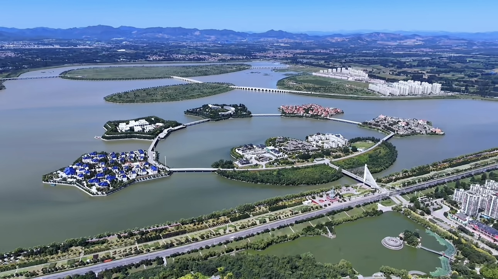

迁安铁矿资源储量丰富，抓住首钢东迁的历史机遇快速崛起，成为华北重要钢铁工业基地，依靠工矿产业带动早期城市建设。
迁安政府意识到铁矿早晚有挖空的一天，于是进行转型，关停散乱污企业，优化产业结构，从资源枯竭型工矿城市谋求绿色转型，大力布局文旅、现代农业与高新制造业。
依托滦河水系开挖河湖、治理生态，打造北方水城，完善城市公园、滨湖景观，大力开发长城、黄帝文化旅游，获评全国文明城市、国家园林城市。
